command + shift + j 打开控制台
一般输出
- console.log() 普通打印
- console.info() 一般信息
- console.warn() 警告提示
- console.error() 错误提示
- console.debug() 等于 log
大家可能不知道的，console 可以使用 printf 风格的占位符
目前支持字符（%s）、整数（%d或%i）、浮点数（%f）、格式化自身(%c)、格式化 DOM对象(%o) 、 格式化 JavaScript 对象 (%O)。
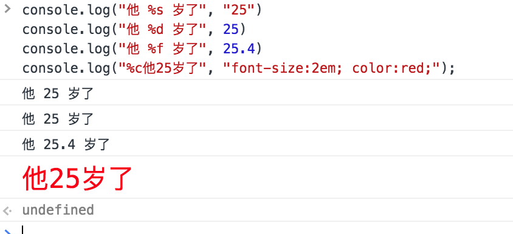
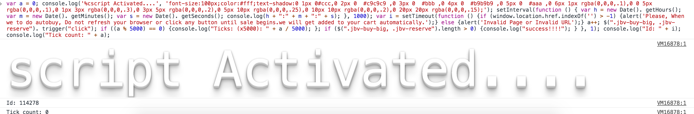
console.group()
console.groupEnd()
分组打印内容
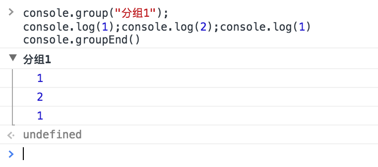
console.groupCollapsed()
分组打印内容， 默认折叠
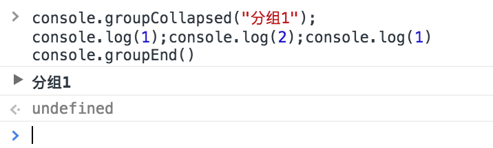
console.table()
可以直接把一个 [
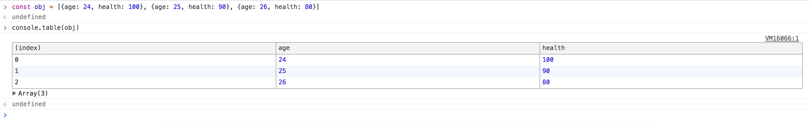
console.trace()
追溯式打印, 我们代码中的
1 | console.log(this.xxx, 13123123) |
以后就可以换成
1 | console.trace(this.xxx) |
了
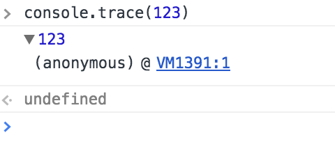
console.dir()
打印级联内容, 类似上面的 console
1 | console.dir(document.body) |
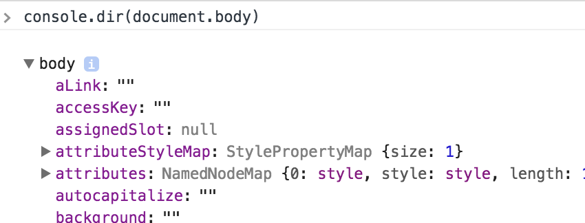
console.dirxml()
打印级联内容，并以 xml 格式解析
1 | console.dirxml(document.body) |
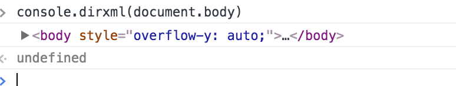
console.assert() 断言
它会在传入的第一个参数为 false 的时候， 抛出第二个参数。
举个例子，为了防止日常开发中的日志信息误上生产环境后产生的一些问题， 可以设置全局 debug 常量：
1 | const appConfig = { |
console.clear() 清空控制台
清空控制台信息，同直接执行 clear() 或者按 cmd + k， 不同的是它可以在代码中调用
console.context()
返回 console 对象的内容：
1 | const myc = console.context(); |
目前想不到实际用处
console.count() 计数
可以记录一个函数或者一段代码重复执行了多少次，每执行一次，就会自动增加1
1 | Array(3).fill(0).forEach(v => console.count('执行次数：')) |
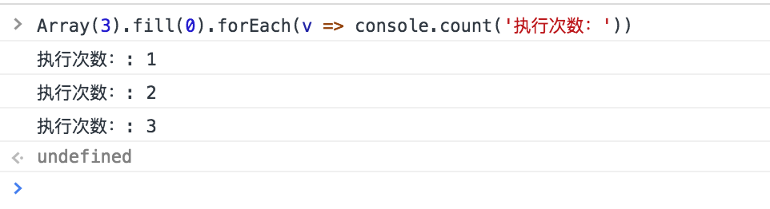
性能分析
console.time()
console.timeEnd()
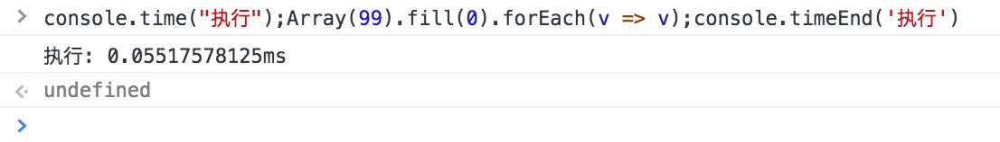
console.memory
性能分析工具，可以用来查看当前堆栈的使用情况
它是 console 的一个属性，不是一个方法。
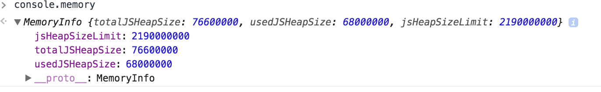
console.profile()
console.profileEnd()
可以查看 CPU 使用相关的信息、代码执行具体过程。
鸡肋， 可以通过UI 实现。

其他技巧
选择元素
$()
返回满足指定CSS规则的第一个元素，此方法为document.querySelector()的简化
$$()
返回满足指定CSS规则的所有元素，此方法为querySelectorAll()的简化。
XPath
XPath即为XML路径语言（XML Path Language），它是一种用来确定XML文档中某部分位置的语言。
xPath 语法：http://www.w3school.com.cn/xpath/
例子:
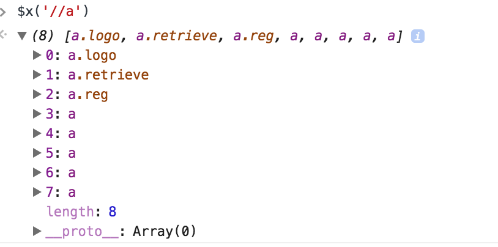
$_
访问最近的控制台结果，如：
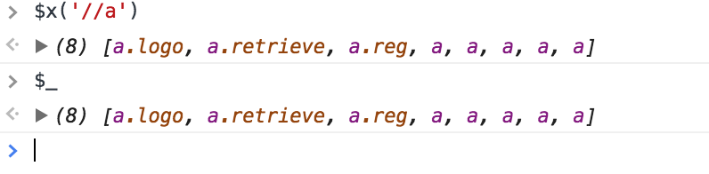
inspect
可以直接在命令行中审查元素
inspect($0)
copy
直接复制到系统粘贴板
1 | copy(document.body) |
keys & values
同 Object.keys 、Object、values
monitor & unmonitor
监控一个函数的调用，打印出这个函数的具体调用信息，如果想知道一个函数在哪里被调用了，一共调用几次的时候， 很有用。
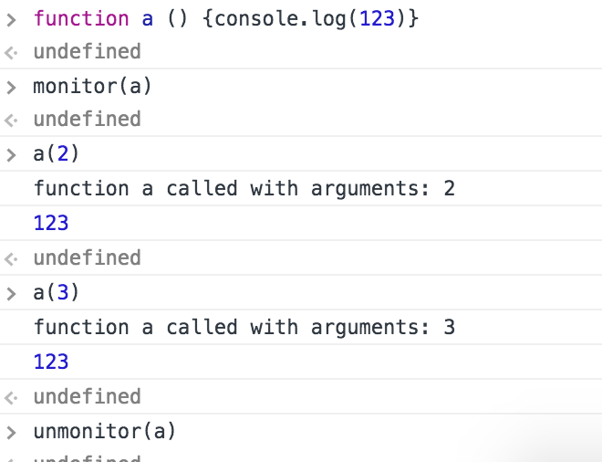
monitorEvents
监控事件，ex:
1 | monitorEvents(document.body, "click"); |
参考文章：
https://developers.google.com/web/tools/chrome-devtools/console/
http://www.cnblogs.com/Wayou/p/chrome-console-tips-and-tricks.html